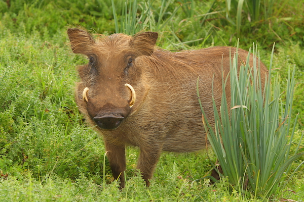

WARTHOG
Phacochoerus is a genus of wild pigs in the family Suidae, known as warthogs. It is the sole genus of subfamily Phacochoerinae. They are found in open and semiopen habitats, even in quite arid regions, in sub-Saharan Africa. The two species were formerly considered conspecific under the scientific name Phacochoerus aethiopicus, but today this is limited to the desert warthog, while the best-known and most widespread species, the common warthog, is Phacochoerus africanus.
Although covered in bristly hairs, their bodies and heads appear largely naked from a distance, with only the crest along the back, and the tufts on their cheeks and tails being obviously haired. The English name refers to their facial wattles, which are particularly distinct in males. They also have very distinct tusks, which reach a length of 25.5 to 63.5 cm in the males, but are always smaller in the females. They are largely herbivorous, but occasionally also eat small animal food.
WHERE WILL YOU FIND THEM?
You will find the warthogs at WA11, near the elephant enclosure.